| [ Team LiB ] |
|
3.6 Integrating SystemWe found in the previous chapter that material balances on liquid surge vessels or gas drums often yielded models with the following form: 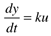 In the Laplace domain, this is 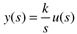 Consider an integrating process initially at steady state, with y(0) = 0. Step ResponseIf a step input change of Du is made at t = 0, 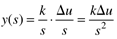 and we find the time-domain value 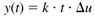 That is, the output ramps with a constant slope of kDu. Impulse ResponseIf an impulse input of magnitude P is made at t = 0, 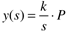 then the output immediately changes to a new steady-state value of 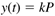 Example 3.5: Tank-Height ProblemThe mathematical model for a liquid surge tank is (see Example 1.3) 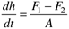 where h is the liquid height, A is the constant cross-sectional area of the tank, F1 is the inlet flow rate, and F2 is the outlet flow rate. Assume that the outlet flow rate remains constant at a steady-state value of F2s. Defining the output and input in deviation variable form as 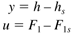 For a constant cross-sectional area of 10 m2, the model is 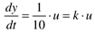 Step ResponseFor a step input change of 0.25 m3/min, the output response is 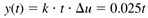 which is shown in Figure 3-7. If the steady-state height is 2 meters, then the height as a function of time is 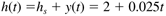 Figure 3-7. Step response of a liquid surge tank. Deviation variables.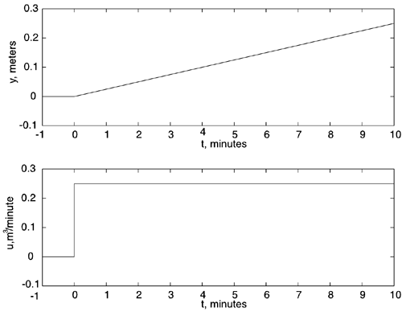 Impulse ResponseFor an impulse input of 1 m3, the output response is 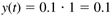 which makes sense, because the cross-sectional area is 10 m3. |
| [ Team LiB ] |
|